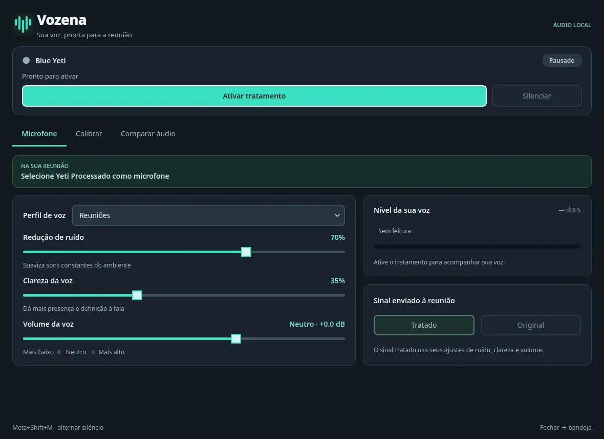

A little guidance
A 10-second calibration proposes settings for your voice and room. Suggestions stay suggestions until you explicitly apply them.
Give your Blue Yeti a little clarity. A native Linux app that helps your voice come through in calls, meetings, and everything you have to say.
Free and open source. Your audio stays on your computer.

Keep the character of your voice. Tame background noise, shape the tone, and find a comfortable level before your next call.
Decorative signal illustration — not a measured before-and-after comparison.
RNNoise suppresses background noise locally, helping speech take the foreground.
Adjust the equalizer to shape your voice. Keep control of the sound that feels right to you.
Set your output volume and watch the real level meter, so you can spot peaks before a call.
Vozena creates a processed microphone for your calling app. You choose the sound; your desktop does the rest.
Read the setup stepsOpen Vozena with your classic USB Blue Yeti connected. Keep its gain and pickup pattern on the microphone’s physical controls.
Run a guided 10-second calibration. Review the suggested settings and apply them when you’re ready. Listen to an A/B sample if you want.
Click “Ativar tratamento” in Vozena, then select “Yeti Processado” in your meeting app’s audio settings. Leave Vozena running in the tray and get on with the conversation.
Useful tools for your microphone, in one quiet corner of your desktop.
A 10-second calibration proposes settings for your voice and room. Suggestions stay suggestions until you explicitly apply them.
Record a short 10-second sample and compare unprocessed and processed audio. The sample lives only in memory, never in a saved recording.
Mute from the tray or use a global keyboard shortcut on KDE. Stay in your conversation without hunting for a window.
Automatic reconnection brings your microphone back after it disconnects, keeping everyday setup a little simpler.
Vozena is a first public preview, built and tested around one real desktop and microphone. Here’s exactly where it stands.
App interface: Portuguese. Documentation: English and Portuguese.
Other Linux distributions, desktops, and microphones have not yet been verified. The global shortcut is KDE-only. Windows and macOS are not supported.
Audio processing happens locally. Vozena does not send your audio to a cloud service.
Your meeting app still follows its own audio and privacy settings.
Start with the v0.4.2 preview. You’ll need Fedora 44 or Ubuntu 26.04 x86_64, Python 3.11 or newer, and the tested microphone. Follow the source installation instructions.
Download the latest releaseLinux · Source release · GPL-3.0-or-laterDownload vozena-0.4.2-source.tar.gz and SHA256SUMS from the release page. Verify the archive’s checksum before extracting it.
sha256sum --check SHA256SUMSFrom the extracted folder, run the setup below. It installs verified audio dependencies and a dedicated Python runtime without opening the app or recording audio.
python3 scripts/prepare.pyConnect your Yeti and launch the app. Click “Ativar tratamento”, then select “Yeti Processado” in your calling app.
~/.local/bin/vozenaVozena is a native Linux desktop app. It uses PipeWire to provide a processed virtual microphone named “Yeti Processado” that you can choose in your calling app. This website never accesses your microphone.
No. Vozena is an independent open-source project, developed with a classic USB Blue Yeti. Blue Yeti and Logitech are trademarks of their respective owners. Microphone gain and pickup pattern stay on the hardware’s physical controls.
Vozena processes microphone audio locally and does not upload it. The optional A/B tool records a short 10-second sample only in memory for you to listen back. It is not a conversation recorder.
Enable “Ativar tratamento” in Vozena, then choose “Yeti Processado” in an app that accepts PipeWire audio inputs. Support in your particular meeting app is not guaranteed by the tested desktop setup. Check its input settings and make a test call.
Vozena uses RNNoise for noise suppression. Results depend on your room, microphone position, and settings. It does not provide echo cancellation, and no filter can promise to remove every sound.
v0.4.2 is an early public release, tested on the setup listed above. It is a preview for people comfortable installing a Linux app from source and reporting issues. Broader compatibility still needs testing.
Read the code, report what you find, or help test another Linux setup. Vozena is open source, and there’s room for your voice here too.